聚类
在无监督学习（unsupervised learning）中，训练样本的标记信息是未知的，学习的目的是揭示数据的内在性质及规律，为进一步的数据分析提供基础。这类学习任务中研究最多，应用最广的是聚类（clustering）。
这一章的内容大致如下：
聚类任务：聚类过程是怎样的？聚类有什么用途？聚类的两个基本问题是什么？
性能度量：聚类的目标是什么？聚类性能度量的两大类指什么？各包含哪些度量指标？
距离计算：距离度量需要满足哪些基本性质？怎样度量有序属性？怎样度量无序属性？相似度度量和距离度量有什么区别？
原型聚类：什么是原型聚类？k均值算法是怎样的？学习向量量化算法是怎样的？高斯混合聚类是怎样的？
密度聚类：什么是密度聚类？DBSCAN算法是怎样的？
层次聚类：什么是层次聚类？AGNES算法是怎样的？
聚类任务
聚类（clustering）
定义
聚类试图将数据集中的样本划分为若干个通常是不相交的子集，每个子集称为一个簇（cluster）。通常来说每个簇可能对应一些特征，比方说音乐可以聚类成古典音乐、摇滚乐、流行乐等等。但聚类过程仅产生簇结构，簇对应的概念语义需要使用者来定义。
简单来说，聚类可以分为两种用途：
- 作为一个单独过程，用于寻找数据内在的分布结构；
- 作为其他学习任务的前驱过程，比方说根据聚类结果定义类标记，然后再进行分类学习；
聚类算法的两大基本问题是性能度量和距离计算。
数学定义
参数设定：
假定样本集 D={x1,x2,...,xm} 包含 m 个无标记样本，每个样本 xi={xi1,xi2,...,xin} 是一个 n 维特征向量，聚类算法将样本集划分为 k 个不相交的簇 {Cl∣l=1,2,...,k} ，用 λj∈{1,2,...,k} 表示样本 xj 的“簇标记”。
则存在以下公式
- 簇不相交：Cl′∩l′=lCl=∅
- 并集为样本集：D=∪l=1kCl
- 聚类结果：λ=(λ1;λ2;...;λm)
聚类和分类的区别
聚类(Clustering)：是指把相似的数据划分到一起，具体划分的时候并不关心这一类的标签，目标就是把相似的数据聚合到一起，聚类是一种无监督学习(Unsupervised Learning)方法。分类(Classification)：是把不同的数据划分开，其过程是通过训练数据集获得一个分类器，再通过分类器去预测未知数据，分类是一种监督学习(Supervised Learning)方法。
性能度量（讲的相当简略）
性能度量亦称聚类“有效性指标”（validity index）
主要用途
“物以类聚”
两个方向进行衡量：簇内相似度（intra-cluster similarity）高 和 簇间相似度（inter-cluster similarity）低
度量方式
外部指标（external index）
将聚类结果于某个“参考模型”（reference model）进行比较
参数定义
数据集 D={x1,x2,...,xm} ，聚类的划分结果为 C={C1,C2,...,Ck}，参考模型划分结果为 C∗={C1∗,C2∗,...,Cs∗} ，λ 和λ∗ 分别表示聚类和参考模型的簇标记向量。
度量定义：
a=∣SS∣,SS={(xi,xj)∣λi=λj,λi∗=λj∗,i<j}
表示两两样本在聚类结果和参考模型中都属于相同的簇
b=∣SD∣,SD={(xi,xj)∣λi=λj,λi∗=λj∗,i<j}
表示样本对中在聚类结果中属于相同簇但在参考模型中不属于相同的簇
c=∣DS∣,DS={(xi,xj)∣λi=λj,λi∗=λj∗,i<j}
表示样本对中在聚类结果中不属于相同簇但在参考模型中属于相同簇
d=∣DD∣,DD={(xi,xj)∣λi=λj,λi∗=λj∗,i<j}
表示两两样本在聚类结果和参考模型中都不属于相同的簇
常见的聚类性能度量外部指标
Jaccard 系数（Jaccard Coefficient，简称JC）：
JC=a+b+ca
FM 指数（Fowlkes and Mallows Index，简称FMI）：
FMI=a+ba⋅a+ca
Rand 指数（Rand Index，简称RI）：
RI=m(m−1)2(a+d)
这些值得结果值在 [0,1] 之间，越大越好
内部指标（internal index）
直接考察聚类结果而不利用任何参考模型
参数定义
聚类的划分结果为 C={C1,C2,...,Ck} ，簇 Ci 的中心点 μi=∣Ci∣1∑1≤k≤∣C∣xik
度量定义:
avg(C)=∣C∣(∣C∣−1)2∑1≤i<j≤∣C∣dist(xi,xj)
对应于簇内样本间的平均距离
diam(C)=max1≤i<j≤∣C∣dist(xi,xj)
簇内样本间的最远距离
dmin(Ci,Cj)=minxi∈Ci,xj∈Cjdist(xi,xj)
簇间最近样本的间距
dcen(Ci,Cj)=dist(μi,μj)
簇间中心点的间距
常用的聚类性能度量内部指标
DB 指数（Davies-Bouldin Index，简称DBI）：
DBI=k1i=1∑kj=imax(dcen(Ci,Cj)avg(Ci)+avg(Cj))
这里是值越小越好
Dunn 指数（Dunn Index，简称DI）：
DI=1≤i≤kminj=imin(max1≤l≤kdiam(Cl)dmin(Ci,Cj))
这里是值越大越好
距离度量
讲过，其实
距离函数 dist(⋅,⋅)
定义：它是一个距离度量（distance measure）
基本性质
- 非负性：dist(xi,xj)≥0
- 同一性：dist(xi,xj)=0 当且仅当 xi=xj
- 对称性：dist(xi,xj)=dist(xj,xi)
- 直递性：dist(xi,xj)≤dist(xi,xk)+dist(xk,xj)
这些性质也可以用来检测一个函数是否可以用来作为距离度量函数
- 通常基于某种形式的距离来定义“相似度度量”（similarity measure），距离越大，相似度越小
- 但是一定条件下可以不满足所有的基本性质，尤其是直递性
- 在一些特殊情况下可以使三角结构中不相似的距离边达到一定程度的大小突破直递性的性质
- 这种距离成为“非度量距离”（non-metric disttance）
- 此外也可以基于数据样本来确定合适的距离计算公式——距离度量学习（distance metric learning）
属性划分
- 连续属性（continuous attribute）
- 离散属性（categorical attribute）
- 有序属性（ordinal attribute）
- 无序属性（non-ordinal attribute）
闵可夫斯基距离（Minkowski distance）
公式定义：
distmk(xi,xj)=(u=1∑n∣xiu−xju∣p)p1
也称为 xi−xj 的 Lp 范数 ∥xi−xj∥p
常见变形：
曼哈顿距离（Manhattan distance）—— L1 范数：
disted(xi,xj)=∥xi−xj∥2=u=1∑n∣xiu−xju∣2
欧氏距离（Euclidean distance） —— L2 范数：
distman(xi,xj)=∥xi−xj∥1=u=1∑n∣xiu−xju∣
切比雪夫距离（Chebyshev distance）—— L∞ 范数：
distche=∥xi−xj∥∞=u=1maxn(∣xiu−xju∣)
适用有序属性，当属性重要性不同时，可适用”加权距离“（weighted distance）
VDM（Value Difference Metric）
公式定义：
VDM_p(a,b)=i=1∑k∣∣mu,amu,a,i−mu,bmu,b,i∣∣p
参数说明：
- mu,a 表示在属性 u 上取值为 a 的样本数
- mu,a,i 表示在第 i 个样本簇中在属性 u 上取值为 a 的样本数
- k 为样本簇数
适用无序属性，当属性重要性不同时，可适用”加权距离“（weighted distance）
将两者结合到一起
MinkovDM_p(x_i,x_j)=(u=1∑nc∣xiu−xju∣p+u=nc+1∑nVDMp(xiu,xju))p1
原型聚类
很自然的一个问题：什么是原型聚类？
定义：“原型”（prototype）是指样本空间中具有代表性的点
以 西瓜数据集4.0 为例子书中介绍了三种原型聚类算法：k-均值算法（k-means）、学习向量化（LVQ）和 高斯混合聚类（GMM）。
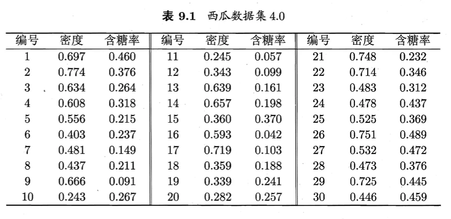k-均值算法
K-means 是我们最常用的基于欧式距离的聚类算法，其认为两个目标的距离越近，相似度越大。
牧师-村民模型
K-means 有一个著名的解释：牧师—村民模型：
有四个牧师去郊区布道，一开始牧师们随意选了几个布道点，并且把这几个布道点的情况公告给了郊区所有的村民，于是每个村民到离自己家最近的布道点去听课。
听课之后，大家觉得距离太远了，于是每个牧师统计了一下自己的课上所有的村民的地址，搬到了所有地址的中心地带，并且在海报上更新了自己的布道点的位置。
牧师每一次移动不可能离所有人都更近，有的人发现A牧师移动以后自己还不如去B牧师处听课更近，于是每个村民又去了离自己最近的布道点……
就这样，牧师每个礼拜更新自己的位置，村民根据自己的情况选择布道点，最终稳定了下来。
我们可以看到该牧师的目的是为了让每个村民到其最近中心点的距离和最小。
算法定义
给定样本集 D={x1，x2,...,xm}，“k - 均值” （k-means）算法针对聚类所得簇划分 C={C1,C2,...,Ck} 最小化平方误差
E=i=1∑kx∈Ci∑∥x−μi∥22
其中 μi=∣Ci∣1∑x∈Cix 是簇 Ci 的均值向量。
最小化上式并不容易，找到它的最优解需考察样本集 D 所有可能的簇划分，这是一个 NP 难问题[Aloise et al., 2009]。
K-means 的算法步骤为：
- 选择初始化的 k 个样本作为初始聚类中心 a=a1,a2,…ak ；
- 针对数据集中每个样本 xi 计算它到 k 个聚类中心的距离并将其分到距离最小的聚类中心所对应的类中；
- 针对每个类别 aj ，重新计算它的聚类中心 aj=∣ci∣1∑x∈cix （即属于该类的所有样本的质心）；
- 重复上面 2 3 两步操作，直到达到某个中止条件（迭代次数、最小误差变化等）。
算法描述
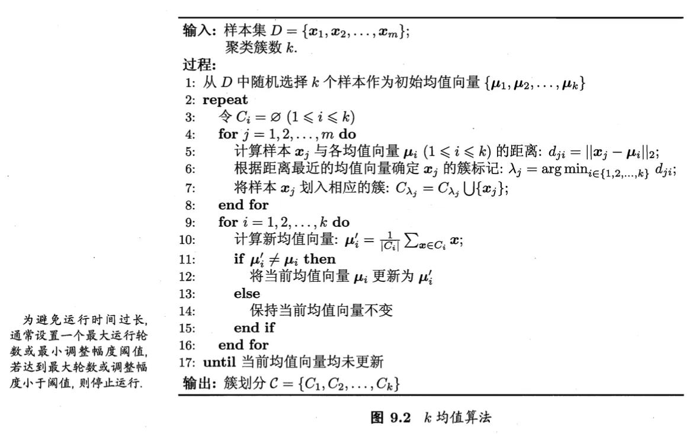经典k-means源代码，下左图是原始数据集，通过观察发现大致可以分为 4 类，所以取 k=4，测试数据效果如下右图所示。
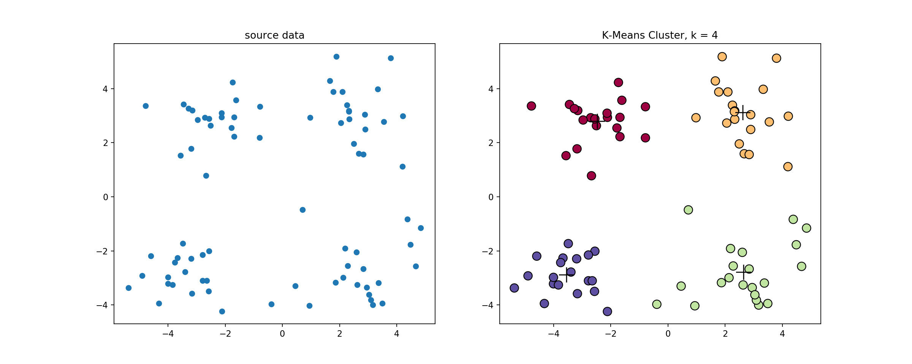 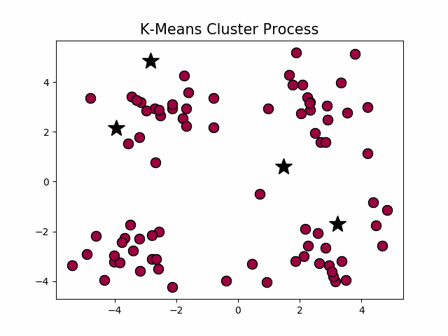看起来很顺利，但事情并非如此，我们考虑k-means算法中最核心的部分，假设 xi(i=1,2,…,n) 是数据点，μj(j=1,2,…,k) 是初始化的数据中心，那么我们的目标函数可以写成
mini=1∑nj=1,2,...,kmin∣∣xi−μj∣∣2
这个函数是非凸优化函数，会收敛于局部最优解，可以参考证明过程。举个 ，μ1=[1,1],μ2=[−1,−1] ，则
z=j=1,2min∣∣xi−μj∣∣2
该函数的曲线如下图所示
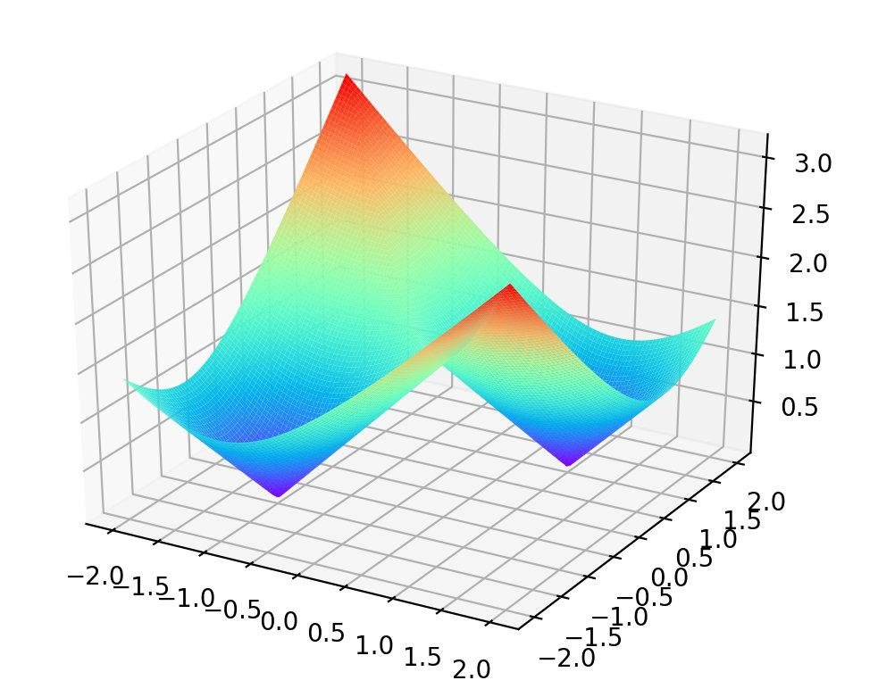可以发现该函数有两个局部最优点，当初始质心点取值不同的时候，最终的聚类效果也不一样，接下来我们看一个具体的实例。
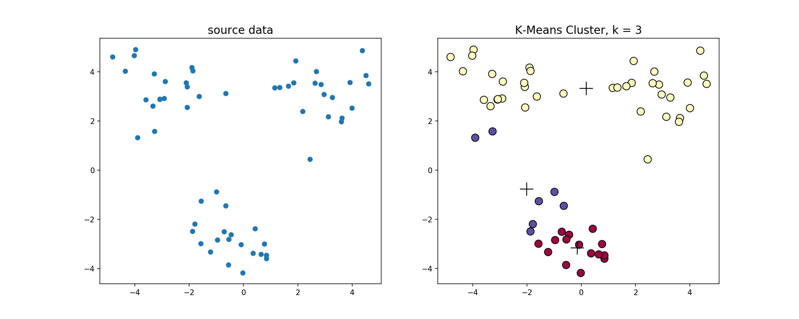在这个例子当中，下方的数据应该归为一类，而上方的数据应该归为两类，这是由于初始质心点选取的不合理造成的误分。而 k 值的选取对结果的影响也非常大，同样取上图中数据集，取 k=2,3,4，可以得到下面的聚类结果：
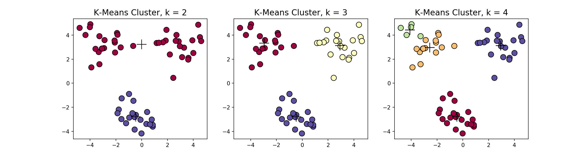优点
- 容易理解，聚类效果不错，虽然是局部最优， 但往往局部最优就够了；
- 处理大数据集的时候，该算法可以保证较好的伸缩性；
- 当簇近似高斯分布的时候，效果非常不错；
- 算法复杂度低。
缺点
- K 值需要人为设定，不同 K 值得到的结果不一样；
- 对初始的簇中心敏感，不同选取方式会得到不同结果；
- 对异常值敏感；
- 样本只能归为一类，不适合多分类任务；
- 不适合太离散的分类、样本类别不平衡的分类、非凸形状的分类。
调优
针对 K-means 算法的缺点，我们可以有很多种调优方式：如数据预处理（去除异常点），合理选择 K 值，高维映射等。
数据预处理
K-means 的本质是基于欧式距离的数据划分算法，均值和方差大的维度将对数据的聚类产生决定性影响。所以未做归一化处理和统一单位的数据是无法直接参与运算和比较的。常见的数据预处理方式有：数据归一化，数据标准化。
此外，离群点或者噪声数据会对均值产生较大的影响，导致中心偏移，因此我们还需要对数据进行异常点检测。
合理选择 K 值
K 值的选取对 K-means 影响很大，这也是 K-means 最大的缺点，常见的选取 K 值的方法有：手肘法、Gap statistic 方法。
手肘法：
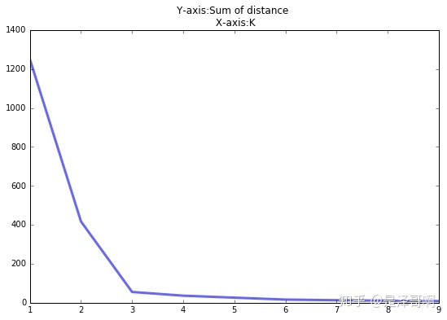当 K <3 时，曲线急速下降；当 K> 3 时，曲线趋于平稳，通过手肘法我们认为拐点 3 为 K 的最佳值。
手肘法的缺点在于需要人工看不够自动化，所以我们又有了 Gap statistic 方法，这个方法出自斯坦福大学的几个学者的论文：Estimating the number of clusters in a data set via the gap statistic
Gap(K)=E(logDk)−logDk
其中 Dk 为损失函数，这里 E(logDk) 指的是 logDk 的期望。这个数值通常通过蒙特卡洛模拟产生，我们在样本里所在的区域中按照均匀分布随机产生和原始样本数一样多的随机样本，并对这个随机样本做 K-Means，从而得到一个 Dk 。如此往复多次，通常 20 次，我们可以得到 20 个 logDk 。对这 20 个数值求平均值，就得到了 E(logDk) 的近似值。最终可以计算 Gap Statisitc。而 Gap statistic 取得最大值所对应的 K 就是最佳的 K。

由图可见，当 K=3 时，Gap(K) 取值最大，所以最佳的簇数是 K=3。
Github 上一个项目叫 gap_statistic ，可以更方便的获取建议的类簇个数。
采用核函数
基于欧式距离的 K-means 假设了了各个数据簇的数据具有一样的的先验概率并呈现球形分布，但这种分布在实际生活中并不常见。面对非凸的数据分布形状时我们可以引入核函数来优化，这时算法又称为核 K-means 算法，是核聚类方法的一种。核聚类方法的主要思想是通过一个非线性映射，将输入空间中的数据点映射到高位的特征空间中，并在新的特征空间中进行聚类。非线性映射增加了数据点线性可分的概率，从而在经典的聚类算法失效的情况下，通过引入核函数可以达到更为准确的聚类结果。
训练结果
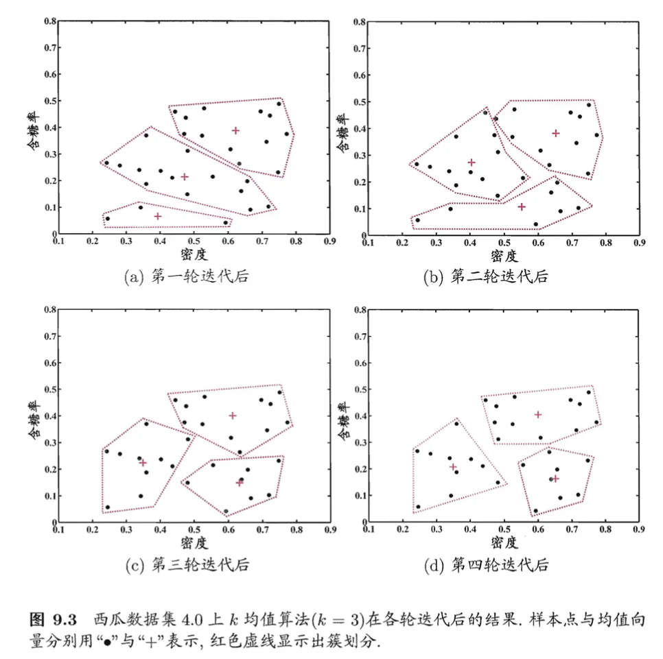PS：k - 均值算法应该算是聚类算法中特别好理解和掌握的一种了，因此书上也没有详细的介绍其内容。
学习向量量化（Learning Vector Quantization，简称LVQ）（没讲）
学习向量量化（Learning vector quantization，LVQ）是一种有监督学习的分类算法，可以用于多类别分类问题。它将输入数据映射到一个离散的输出空间中，并利用欧几里德距离或余弦相似度等度量方法来计算样本向量和类中心之间的距离，并根据距离分配分类标签。
在 LVQ 算法中，在训练过程中会生成若干个代表性向量作为分类中心，这些代表性向量通常被称为原型向量（prototype），每个原型向量所代表的类别即是它所属的类别。 在训练集上，LVQ 通过对每个实例的特征向量与原型进行比较，逐渐调整每个原型的位置，最终得到了一组使得分类误差达到最小的原型向量。
在预测新数据时，可以使用与训练相同的度量来计算新数据向量和每个原型向量之间的距离，将其归类于距离最近的原型向量所代表的类别。
与其他分类算法相比，LVQ具有简单且易于解释的模型、快速训练和局部更新等优点。然而，需要手动设置原型数量、节选合适的训练集等超参数，容易受到“噪声”数据的影响等问题。因此，在实际使用时需要根据具体场景选择合适的参数和优化策略来提高算法性能。
学习向量量化算法（或简称LVQ）是一种人工神经网络算法，允许选择要挂起的训练实例数量，并准确了解这些实例应该是什么样子。
算法定义
同样是试图找到一组原型向量来刻画聚类结构，不同的是 LVQ 假设数据样本带有类别标记，学习过程中利用样本的这些监督信息来辅助聚类。
给定样本集 D={(x1,y1),(x2,y2),...,(xm,ym)}，yj∈Y 是样本 xj 的类别标记，LVQ 目标是学得一组 n 维原型向量 {p1,p2,...,pq}，
每个原型向量代表一个聚类簇，簇标记 ti∈Y。
引发一个问题：向量是如何划分空间的？
对任意样本，它将被划入与其距离最近的原型向量所代表的的簇中。
每个原型向量 pi 定义了一个与之相关的一个区域 Ri ，该区域中每个样本与 pi 的距离不大于它与其他原型向量之间的距离
Ri={x∈X∣∥x−pi∥2≤∥x−pi′∥2,i′=i}
即完成了对样本空间 X 的簇划分 {R1,R2,...,Rq}
该划分通常称为“Voronoi剖分”（Voronoi tessellation）
算法描述
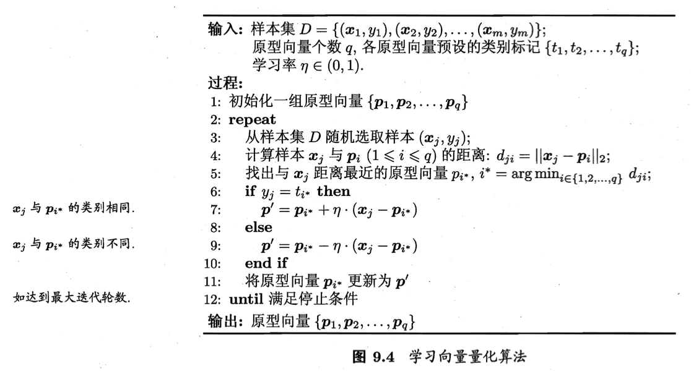其中第七行和第九行都是源自 p′ 与 xj 之间的距离推导 ∥p′−xj∥2
当类别标记相同时
p′=pi∗+η⋅(xj−pi∗)
∥p′−xj∥2=∥pi∗+η⋅(xj−pi∗)−xj∥2=(1−η)⋅∥pi∗−xj∥2
当类别标记不同时
p′=pi∗−η⋅(xj−pi∗)
∥p′−xj∥2=∥pi∗−η⋅(xj−pi∗)−xj∥2=(1+η)⋅∥pi∗−xj∥2
最终学得一组原型向量 {p1,p2,...,pq} 后，即可实现对样本空间 X 的簇划分。
训练结果
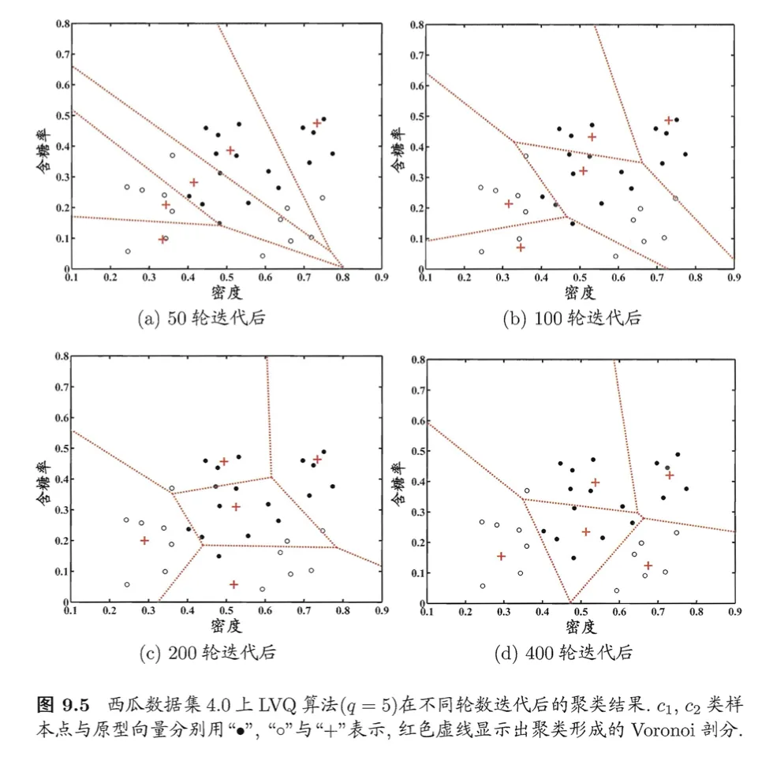学习目的是找到5个原型向量 p1,p2,p3,p4,p5
其分别对应的类别标记假定为 c1,c2,c2,c1,c1，其中 c1 为好瓜， c2 为坏瓜
高斯混合聚类
高斯混合模型（GMM）可以看做是k-means模型的一个优化。它既是一种工业界常用的技术手段，也是一种生成式模型。高斯混合模型试图找到多维高斯模型概率分布的混合表示，从而拟合出任意形状的数据分布。
高斯混合（Mixture-of-Gaussian）聚类采用概率模型来表达聚类原型
- 高斯混合聚类是采用概率模型对原型进行刻画
- 簇划分则由原型对应后验概率确定
多元高斯分布的定义
- μ 是 n 维均值向量
- Σ 是 n×n 的协方差矩阵
多元高斯高斯分布由这两个参数确定
概率密度记为：p(x∣μ,Σ)
为了凸显相应参数的依赖关系
高斯混合分布
pM=i=1∑kαi⋅p(x∣μi,Σi)
参数说明
- 该分布由 k 个混合成分组成，每个成分对应一个高斯分布
- μi 与 Σi 是第 i 个高斯混合成分的参数
- αi>0 为相应的“混合系数” （mixture coefficient）， ∑i=1kαi=1
算法过程
训练集生成方式
首先，根据 α1,α2,...,αk 定义的先验分布选择高斯混合成分，其中 αi 为选择第 i 个混合成分的概率，然后，根据被选择的混合成分的概率密度函数进行采样，从而生成相应的样本。
高斯混合成分生成的后验概率确定
令随机变量 zj∈{1,2,...,k} 表示生成样本 xj 的高斯混合成分，其取值未知，显然，zj 的先验概率 P(zj=i) 对应于 αi(i=1,2,...,k)，根据贝叶斯定理，zj 的后验概率分布对应于
pM(zj=i∣xj)=pM(xj)P(zj=i)⋅pM(xj∣zj=i)=∑l=1kαl⋅p(xj∣μl,Σl)αi⋅p(xi∣μi,Σi)
记为 γji(i=1,2,...,k)
簇标记确定
当高斯混合分布已知时，高斯混合聚类将把样本集 D 划分为 k 个簇 C={C1,C2,...,Ck}
每个样本 xj 的簇标记 λj 如下确定 λj=i∈{1,2,...,k}argmaxγji
参数求解
给定样本集 D，可采用极大似然估计，即最大化（对数）似然
LL(D)=ln(j=1∏mpM(xj))=j=1∑mln(i=1∑kαi⋅p(xj∣μi,Σi))
EM算法求解:
- 根据当前参数来计算每个样本属于每个高斯成分的后验概率（E步）
- 再根据极大似然估计极值条件，更新参数（M步）
PS：这一部分在前面章节贝叶斯分类器中介绍过
算法描述
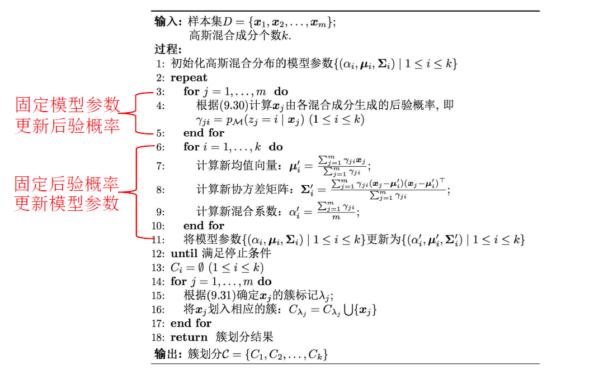
密度聚类
密度聚类亦称“基于密度的聚类”（density-based clustering），此类算法假设聚类结构能通过样本分布的紧密程度确定。
DBSCAN（Density-Based Spatial Clustering of Applications with Noise）
最著名的密度聚类算法
PS：这里算法名字中 密度 是基于 Spatial（空间上）的，而另一种 谱聚类（Spectral Clustering）算法 是基于 Spectral（频谱上）的。
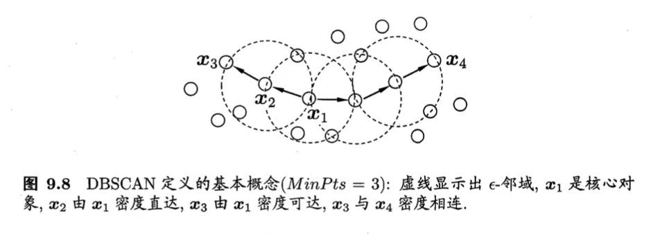原理简单总结就是：基于一组“邻域”参数 (ϵ,MinPts) 来刻画样本分布的紧密程度
概念定义
ϵ - 领域：
对 xj∈D，其 ϵ - 领域包含样本集 D 中与 xj 的距离不大于 ϵ 的样本，即 Nϵ(xj)={xi∈D∣dist(xi,xj)≤ϵ}
密度 (desity) x 的密度为
ρ(x)=∣Nε(x)∣
核心对象：
若 xj 的 ϵ - 领域至少包含 MinPts 个样本，即 ∣Nϵ(xj)∣≥MinPts ，则 xj 是一个核心对象
结点间关系
密度直达（directly density-reachable）：
若 xj 位于 xi 的 ϵ - 领域中，且 xi 是核心对象，则称 xj 由 xi 密度直达
密度直达关系通常不满足对称性：核心对象有交集的情况比较特殊
密度可达（density-reachable）：
对 xi 与 xj ，若存在样本序列 p1,p2,...,pn ，其中 p1=xi,pn=xj 且 pi+1 由 pi 密度直达，则称 xj 由 xi 密度可达
密度可达关系满足直递性，但不满足对称性：同样因为有核心对象的参与
密度相连（density-connected）：
对 xi 与 xj ，若存在 xk 使得 xi 与 xj 均由 xk 密度可达，则称 xi 与 xj 密度相连
密度相连关系满足对称性
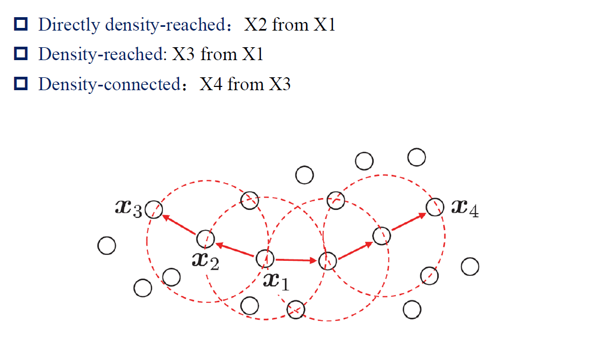
D 中不属于任何簇的样本被认为是噪声（noise）或异常（anomaly）样本，如下图N
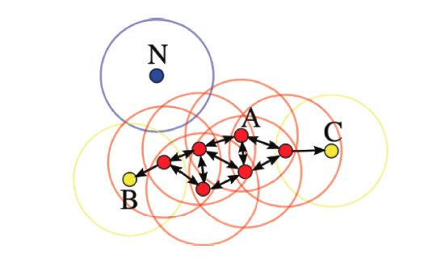簇的定义
由密度可达关系导出的最大的密度相连样本集合
形式化定义
给定领域参数 (ϵ,MinPts)，簇 C⊆D 是满足以下性质的非空样本子集
应满足性质:
- 连接性（connectivity）：xi∈C，xj∈C⇒xi 与 xj 密度相连
- 最大性（maximality）：xi∈C，xj 由 xi 密度可达 ⇒xj∈C
算法描述
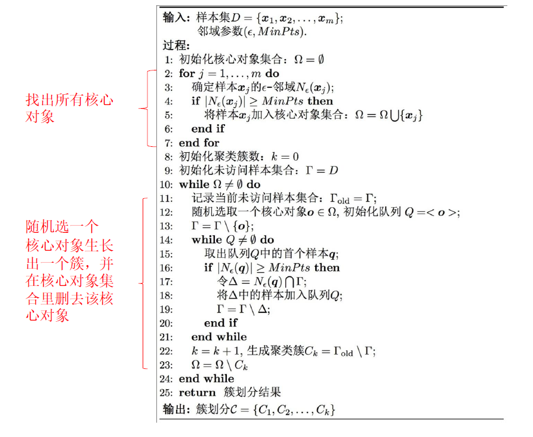构建ε 邻域的过程可以使用kd-tree进行优化，循环过程可以使用Numba、Cython、C进行优化，DBSCAN的源代码，使用该节一开始提到的数据集，聚类效果如下
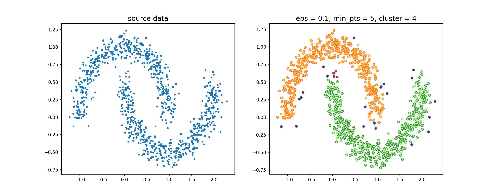聚类的过程示意图
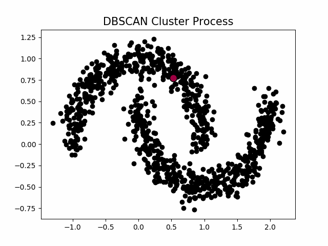当设置不同的 ε 时，会产生不同的结果，如下图所示
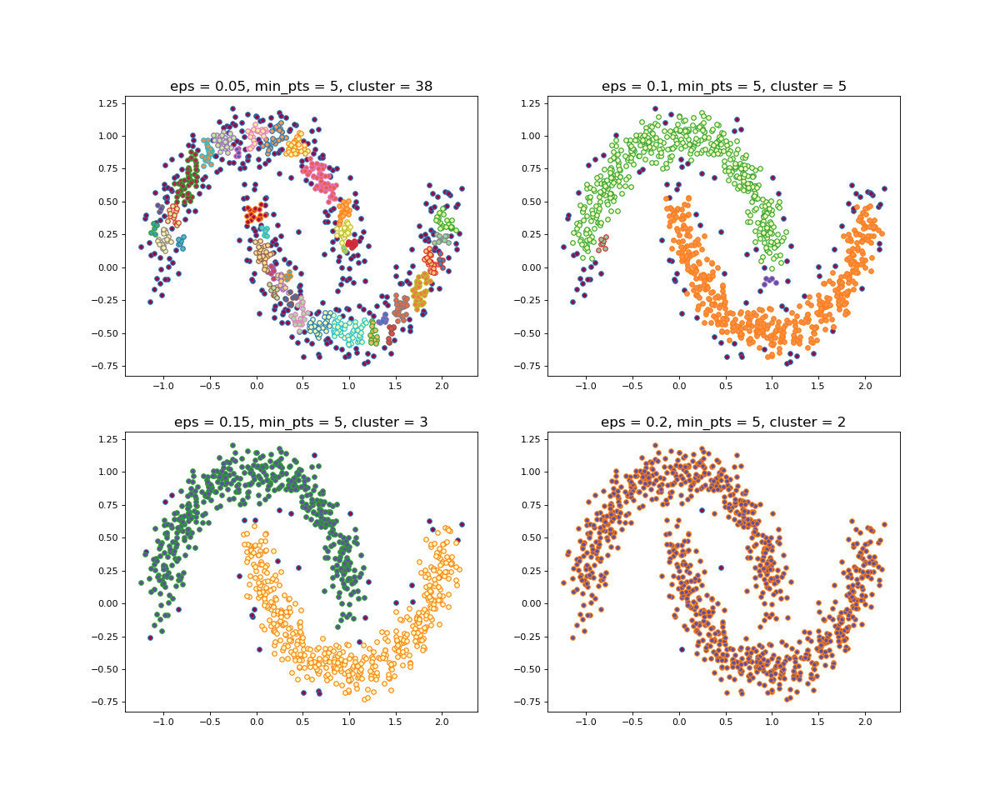当设置不同的 M 时，会产生不同的结果，如下图所示
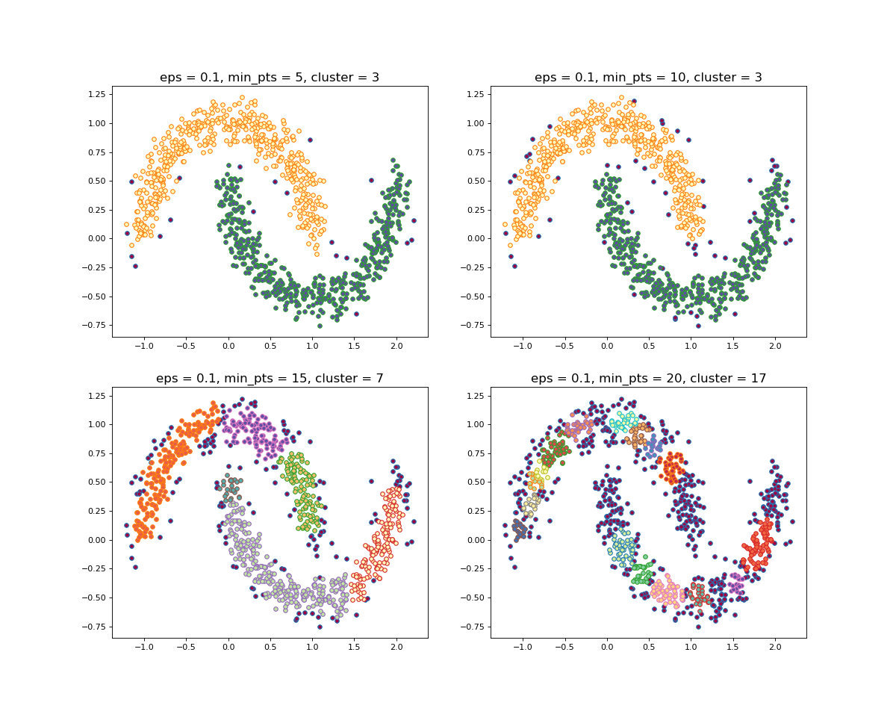一般来说，DBSCAN算法有以下几个特点：
- 需要提前确定 ε 和 M 值
- 不需要提前设置聚类的个数
- 对初值选取敏感，对噪声不敏感
- 对密度不均的数据聚合效果不好
层次聚类
层次聚类（hierarchical clustering）试图在不同层次对数据集进行划分，从而形成树形的聚类结构。
两种策略方式：
AGNES（AGglomerative NESting）
著名的自底向上聚合策略的层次聚类算法
核心思想
它先将数据及中的每个样本看做一个初始聚类簇，然后再算法运行的每一步中找出距离最近的两个聚类簇进行合并，该过程不断重复，知道达到预设的聚类簇个数
常用的距离计算
最小距离
dmin(Ci,Cj)=x∈Ci,z∈Cjmindist(x,z)
AGNES称为“单链接”（single-linkage）
最大距离
dmax(Ci,Cj)=x∈Ci,z∈Cjmaxdist(x,z)
AGNES称为“全链接”（complete-linkage）
平均距离
davg(Ci,Cj)=∣Ci∣∣Cj∣1x∈Ci∑z∈Cj∑dist(x,z)
AGNES称为“均链接”（average-linkage）
算法描述
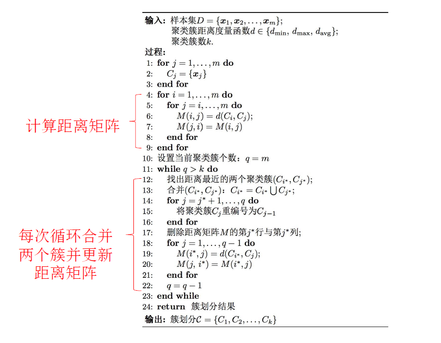层次聚类的合并算法通过计算两类数据点间的相似性，对所有数据点中最为相似的两个数据点进行组合，并反复迭代这一过程。简单的说层次聚类的合并算法是通过计算每一个类别的数据点与所有数据点之间的距离来确定它们之间的相似性，距离越小，相似度越高。并将距离最近的两个数据点或类别进行组合，生成聚类树。
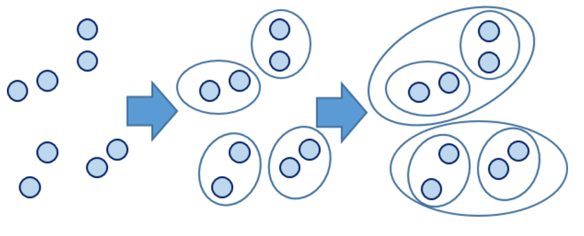相比于Hierarchical K-means算法存在的问题，Agglomerative Clustering算法能够保证距离近的对象能够被聚类到一个簇中，该算法采用的“自底向上”聚类的思路。
训练结果
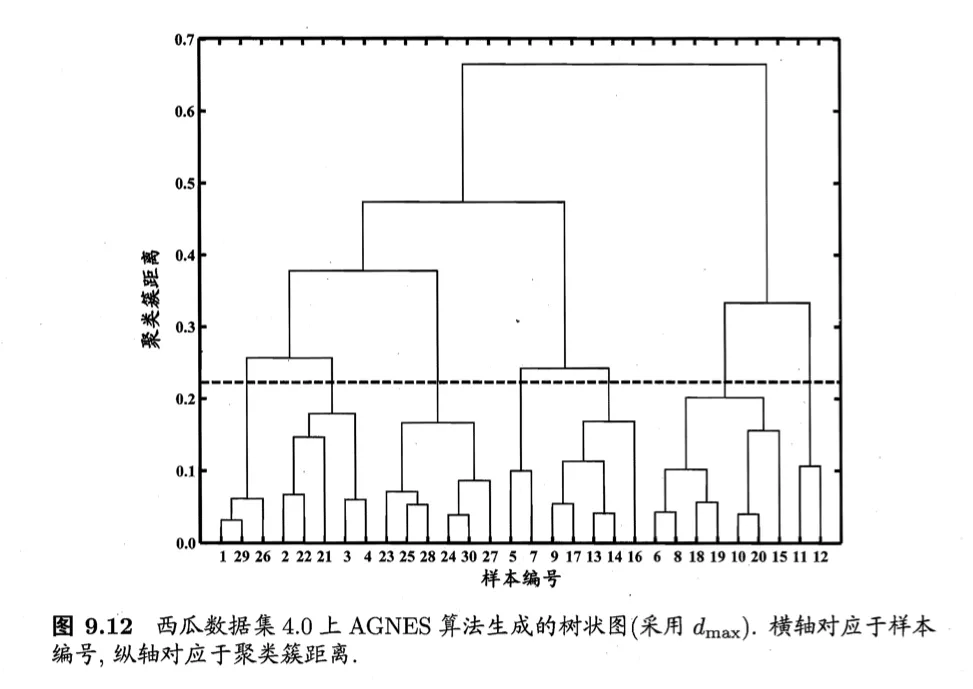
参考
https://zhuanlan.zhihu.com/p/134089340
https://github.com/Vay-keen/Machine-learning-learning-notes
https://github.com/familyld/Machine_Learning
https://zhuanlan.zhihu.com/p/25994179
https://leovan.me/cn/2018/12/ensemble-learning/
https://easyai.tech/ai-definition/ensemble-learning/
https://zhuanlan.zhihu.com/p/72415675
https://www.zhihu.com/question/63492375
https://www.zhihu.com/question/27068705
https://www.zhihu.com/question/19725590/answer/241988854
https://tangshusen.me/2018/10/27/SVM/
https://www.joinquant.com/view/community/detail/a98b7021e7391c62f6369207242700b2
https://zhuanlan.zhihu.com/p/79531731
https://github.com/Charmve/PaperWeeklyAI/blob/master/03_Maiwei AI PaperWeekly/03_机器学习%26深度学习理论/机器学习算法之——K最近邻(k-Nearest Neighbor，KNN)分类算法原理讲解.md
https://blog.csdn.net/zc02051126/article/details/49618633
https://zhuanlan.zhihu.com/p/127022333
https://0809zheng.github.io/2020/03/30/ridge.html
https://www.cnblogs.com/wuliytTaotao/p/10837533.html
https://link.springer.com/referenceworkentry/10.1007/978-1-4899-7687-1_910#Sec13186
http://palm.seu.edu.cn/zhangml/files/mla11-mll.pdf
https://blog.csdn.net/zwqjoy/article/details/80431496
https://ryuchen.club/posts/0x000034/ (推荐）
https://zhuanlan.zhihu.com/p/78798251
https://zhuanlan.zhihu.com/p/622244758
https://www.biaodianfu.com/hierarchical-clustering.html
https://zhuanlan.zhihu.com/p/411533418
https://zhuanlan.zhihu.com/p/33196506
https://www.cnblogs.com/wry789/p/13125658.html
https://blog.csdn.net/qq_41485273/article/details/113178117
https://www.jianshu.com/p/7d4323c28716
http://lunarnai.cn/2019/01/02/watermelon-chap-13/
【周志华机器学习】十三、半监督学习
https://zhuanlan.zhihu.com/p/411533418
https://www.huaxiaozhuan.com/统计学习/chapters/12_semi_supervised.html
https://blog.csdn.net/tyh70537/article/details/80244490
https://zhuanlan.zhihu.com/p/37747650
7125messi.github.io
https://blog.csdn.net/qq_40722827/article/details/104515955
https://www.cnblogs.com/dyl222/p/11055756.html
https://www.zhihu.com/tardis/zm/art/392908965
https://blog.csdn.net/j123kaishichufa/article/details/7679682
https://www.cnblogs.com/heaad/archive/2011/01/02/1924088.html
https://www.cnblogs.com/stevenlk/p/6543628.html
baidinghub.github.io-PCA
baidinghub.github.io-LDA
等等